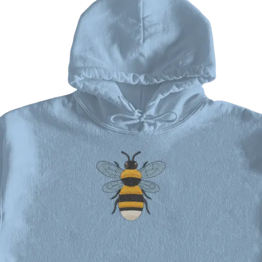

Draw it. Stitch it. Wear it.
Free and open source. Runs in your browser and saves PES or DST files for home machines like Brother.

How it works
-
Draw or drop
Sketch shapes, or drop in an SVG or a picture.
-
See every stitch
Watch it sew, stitch by stitch, before you thread a needle.
-
Sew or wear
Save a .PES or .DST file, or try it on a hoodie.
Start from a design
Open one, change anything, sew it.
The designs could not load. Open Embroidr and start from scratch.
Works with your machine
Brother, Baby Lock and most home machines.
- 5 × 7 in
- 6 × 10 in
- .PES.DST
- Your files stay on your device
Questions
Do I need an embroidery machine?
Not to start. Draw and preview right here. To sew, use any machine that reads PES or DST files.
Is it really free?
Yes. Drawing, editing and previewing are free, and the code is open source on GitHub.
Which file should I pick?
PES for Brother and Baby Lock. DST for most other machines.
Where do my designs go?
Nowhere. Everything runs in your browser and stays on your device.